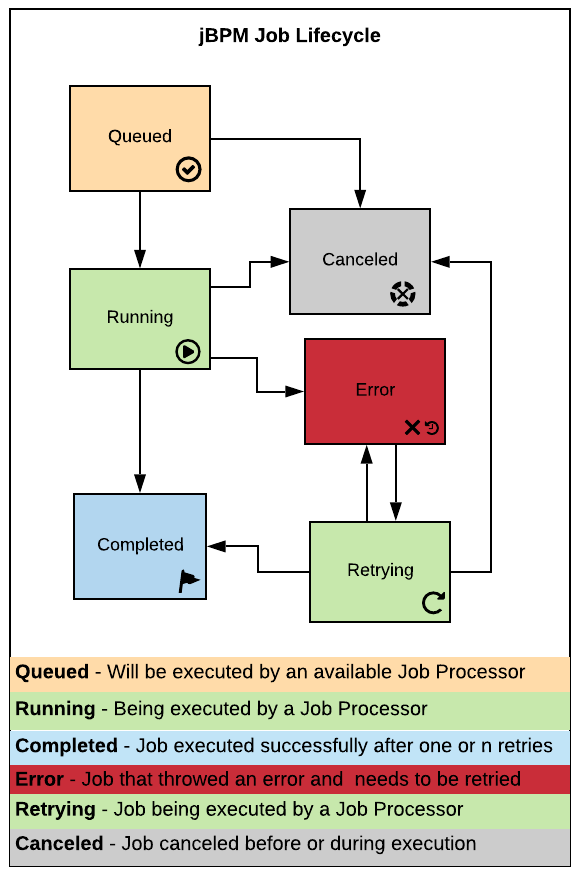

Asynchronous Execution
By default, the flow of tasks is executed in a synchronous way: all tasks will be treated one after the other, by a single thread. This being said, if a process contains, example, four service calls – where each call lasts around 30 seconds – this process execution will run – and allocate JVM, CPU, etc.. – for long two minutes. And worse, the caller of this instance has to wait for two minutes until getting a response. In scenarios using default configurations, this situation results in a timeout exception.
“But my process is quite simple and it should be faster. The problem is the legacy services we have to interact with. How can we improve this process design to achieve better performance, execution and resource consumption?“
The answer is: Use asynchronous capabilities when you have long-running tasks or when you want to define transaction boundaries (Transaction Boundaries will be explained in upcoming posts). In this way, you can delegate the processing of this work unit to a different thread, while the process goes on with the execution.
Here are some possible ways to use asynchronous execution: async tasks, jobs, timers events. The timer and the async tasks can be included in a process diagram. The jobs, differently, are scheduled – registered – within Kie Server to be executed recurrently or not, based on the determined agenda.
The tasks (WI) provided by jBPM have a configurable “Async” property. When a task is marked async:
- The task will create a wait-state on the process;
- The engine does not wait until this task finishes to trigger the next task;
- This task execution will be handled in a different thread;
- This task will be automatically retried by the Executor in case of failure (read the Jobs section for more details).
Let’s understand the Job feature available in jBPM which also allows asynchronous execution.
A job, simply saying, is an independent code unit that is called based on a schedule and is executed asynchronously, in background. jBPM has a generic environment for the execution of these Commands, where the Job Executor is responsible for triggering the timer events, async tasks and executing scheduled jobs.
The job executor is an out-of-the-box jBPM component responsible for resuming process executions asynchronously. It can be configured to attend custom needs from each environment. Possible configuration about job executor and details about native jobs can be found at the official documentation and additional information is available at
| The job executor is an out-of-the-box jBPM component responsible for resuming process executions asynchronously. It can be configured to attend custom needs from each environment. Possible configuration about job executor and details about native jobs can be found at the official documentation and additional information is available at https://karinavarela.me/2019/06/07/jbpm7-quicktips-jobs . |
The Job Executor can properly manage jobs in a clustered environment and guarantee jobs are triggered only once, even if Kie Server runs in a multiple servers architecture. Jobs are persisted and maintained in the database.

On executor start, all jobs are always loaded, regardless if there are one or more instances in the environment. That makes sure all jobs will be executed, even in cases where their fire time has already passed or was scheduled by other executor instance.
Jobs are always stored in DB, no matter what trigger mechanism is used to execute the job (JMS or thread pool). The table RequestInfo stores the jobs that need to be executed. In the expected cycle jobs should be queued, run, and completed. Additionally, it can go through the statuses represented in this diagram.
By default, a single thread pool is used, and services will be retried three times in case of failures. When the executor starts, the following log is displayed in the application server with the current configuration:
23:56:58,050 INFO [org.jbpm.executor.impl.ExecutorImpl] (EJB default - 1) Starting jBPM Executor Component ... - Thread Pool Size: 1 - Retries per Request: 3 - Load from storage interval: 0 SECONDS (if less or equal 0 only initial sync with storage)
Native jobs, custom jobs, and async tasks execution are performed by the Executor which has the characteristics above. A good example of jobs usage in jBPM is to schedule jobs to maintain a good environment health by constantly cleaning the old database audit data.
Besides supporting the ops team by keeping a healthy environment, making good use of the async behavior and its capabilities lead the dev and BA team to perform a better process design. Additionally, it supports the lifecycle of running processes by providing good visibility of the errors that happened during process execution and allows the possibility of solving the unexpected happenings.
This blog post is part of the fourth section of the jBPM Getting started series:
Effective modeling, Integration and Delivery.